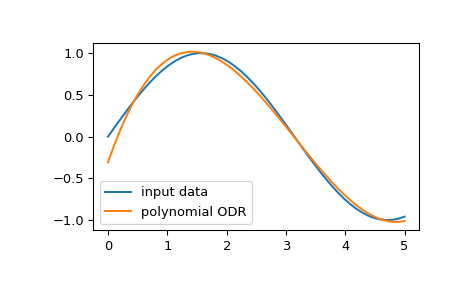

scipy.odr.polynomial¶
-
scipy.odr.polynomial(order)[source]¶ Factory function for a general polynomial model.
- Parameters
- orderint or sequence
If an integer, it becomes the order of the polynomial to fit. If a sequence of numbers, then these are the explicit powers in the polynomial. A constant term (power 0) is always included, so don’t include 0. Thus, polynomial(n) is equivalent to polynomial(range(1, n+1)).
- Returns
- polynomialModel instance
Model instance.
Examples
We can fit an input data using orthogonal distance regression (ODR) with a polynomial model:
>>> import matplotlib.pyplot as plt >>> from scipy import odr >>> x = np.linspace(0.0, 5.0) >>> y = np.sin(x) >>> poly_model = odr.polynomial(3) # using third order polynomial model >>> data = odr.Data(x, y) >>> odr_obj = odr.ODR(data, poly_model) >>> output = odr_obj.run() # running ODR fitting >>> poly = np.poly1d(output.beta[::-1]) >>> poly_y = poly(x) >>> plt.plot(x, y, label="input data") >>> plt.plot(x, poly_y, label="polynomial ODR") >>> plt.legend() >>> plt.show()
